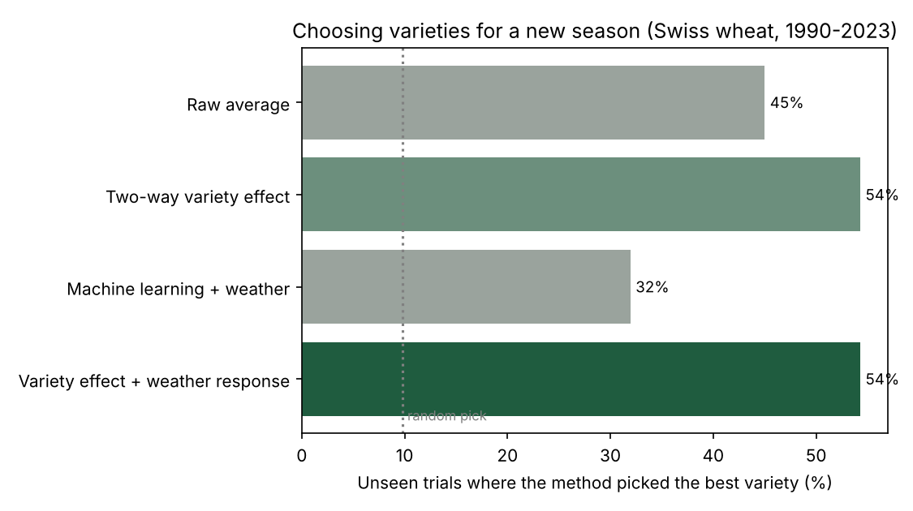
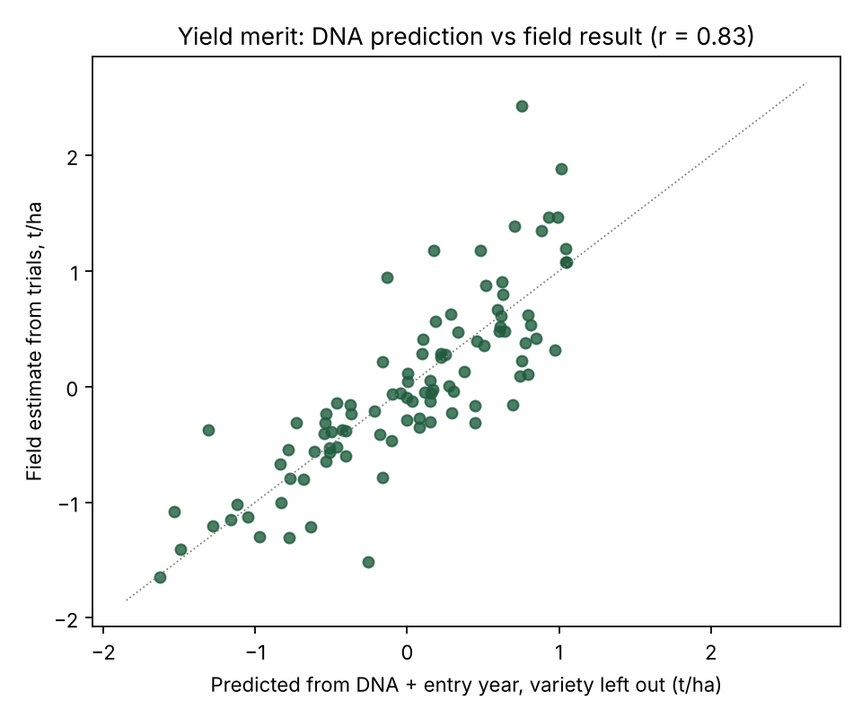

Case study · Seed breeding and variety testing
Which variety should go to market, and where?
Breeders and variety testers decide every year which candidates to advance, register and recommend. I worked through that decision with public trial data, from multi-environment trial analysis to genomic prediction, and tested every method on data it had not seen.
The work, step by step
The same questions a variety testing or breeding team works through, each answered with real published data.
Analyse multi-environment trials
17 maize hybrids in 12 environments and rapeseed trials: ANOVA partition, Finlay–Wilkinson stability, Wricke's ecovalence, GGE biplot and mixed-model heritability (R, lme4).
The top-yielding hybrid was not the most stable, and eight hybrids won at least one environment. For rapeseed, heritability was only 0.08, so the trials could not rank the varieties reliably: a signal to add locations or years before a decision.
Choose varieties for a season that has not happened yet
34 years of Swiss Agroscope winter wheat trials (303 trials, 98 varieties). I compared four ways of choosing, each predicting every season from the other 33 only.
A two-way variety + trial model picked the best variety in 54% of unseen seasons and lost 0.25 t/ha when wrong, a third less than raw averages. A machine-learning model with weather did worse (32%): good statistics beat a black box here.

Predict yield potential from DNA
12,106 SNP markers for the 98 varieties, ridge regression (equivalent to GBLUP) on top of the breeding-progress trend, validated across varieties and forward in time.
Markers added clear information beyond the year a variety entered the trials (r = 0.69 for year alone, 0.82 with DNA). For varieties entering after 2011, the model found half of the best quarter before they were tested. DNA did not predict weather sensitivity (r = 0.15), so that still needs field data.

Put a number on weather risk
A weather model for season quality, then about 3,400 simulated seasons from the live ECMWF seasonal forecast (51 ensemble members) and 33 past seasons per site.
Each variety gets a chance of being best, an expected yield and a bad-year yield, so a grower can choose between the high-yield and the safe option. The win probabilities are calibrated: when the model gave a variety a 39% chance on unseen seasons, it won 42% of the time.
What this shows
| Typical requirement | Where you can see it |
|---|---|
| Analysis of field trials and G×E | Steps 01 and 02: stability, GGE biplot, two-way models |
| Mixed models, BLUPs, heritability | Step 01 (lme4) |
| Genomic prediction | Step 03: ridge/GBLUP on 10,212 SNPs, cross-validated |
| Sound validation and honest reporting | Every step: leave-one-year-out, forward validation, calibration checks, limits stated |
| R and Python | R for trial statistics; Python for modelling, simulation and the web app |
| Explaining results to non-statisticians | The SeedGenius app gives plain-language reasoning for each recommendation |
Limits: public data only, with variety and site names anonymised in the Swiss data, low-input trials without fungicide, and no disease-resistance scores. These are method demonstrations, not official variety advice.
Let's talk
I am completing my M.Sc. in Sustainable International Agriculture at the University of Göttingen and looking for roles in variety testing, breeding data analysis and agricultural research.